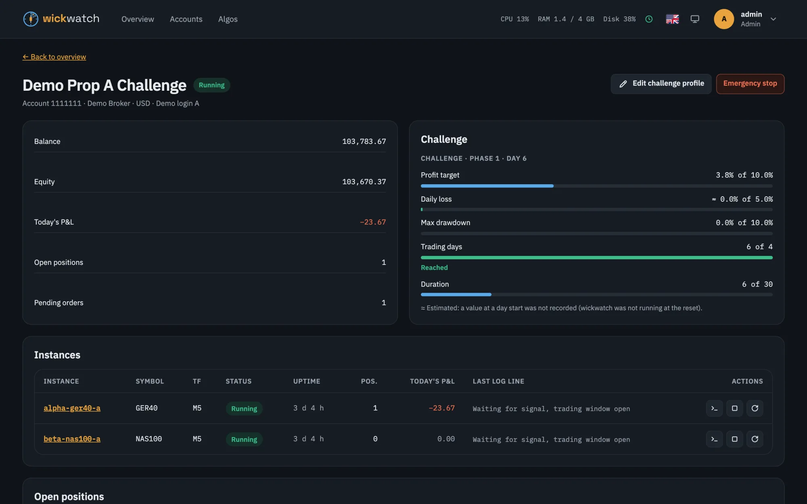
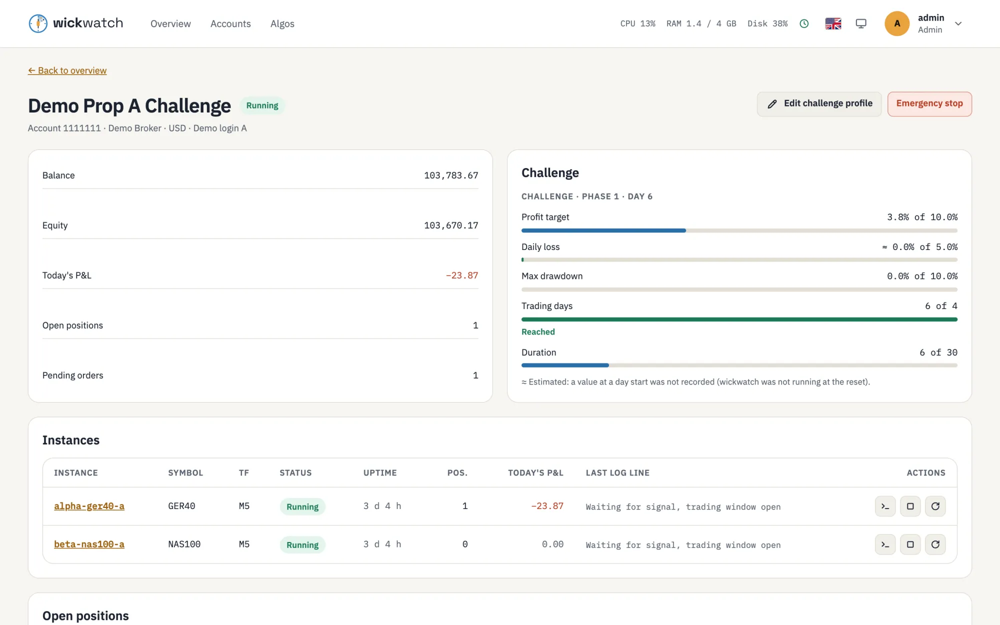

Prop challenges
Keep prop-firm challenge limits in view while your bots trade
A challenge ends at the daily loss or the maximum drawdown, whether you were watching or not. wickwatch measures each account against its challenge rules, shows how much of every limit is used, tells you before one is reached, and can stop the account's bots by itself.
What a challenge profile holds
- Profit target
- Daily loss with reset time and time zone, measured on balance or equity
- Max drawdown: static, trailing, or trailing on the end-of-day balance
- Minimum trading days and duration
- Days without a trade after which the firm closes an inactive account
Templates for FTMO and The Trading Pit fill in a profile; the rules of any other firm can be entered by hand. Every account has its own profile.
Before a limit is reached
- The account page shows how far the profit target is and how much of the daily loss, the max drawdown, the trading days and the duration is used.
- Alerts go to Telegram, Slack, Discord or ntfy when a limit gets close, and again when it is fine.
- A risk preview shows a bot's risk per trade in money against the challenge's loss limits.
- An alert when an account has gone without a trade for half of the days the firm allows, so it is not closed for inactivity. Only an executed trade counts.
- An optional loss guard runs the emergency stop when a limit is nearly used up: the account's bots are stopped, its orders cancelled and its positions closed.


What to keep in mind
The firm's own figures decide, not wickwatch's. wickwatch reads balance and equity at intervals (every 60 seconds by default), so a fast move can pass a limit between two readings; values it could not measure exactly are marked as estimates. Treat the loss guard as a safety net, not as a guarantee.
Prop firms also have rules on automation, devices and IP addresses. They differ between firms and change often: read the notes on prop-firm accounts and your firm's terms before you connect a challenge or funded account.
wickwatch is not affiliated with FTMO, The Trading Pit or any other prop firm. It is a monitoring and control tool, not financial advice, and makes no promise that a challenge is passed.